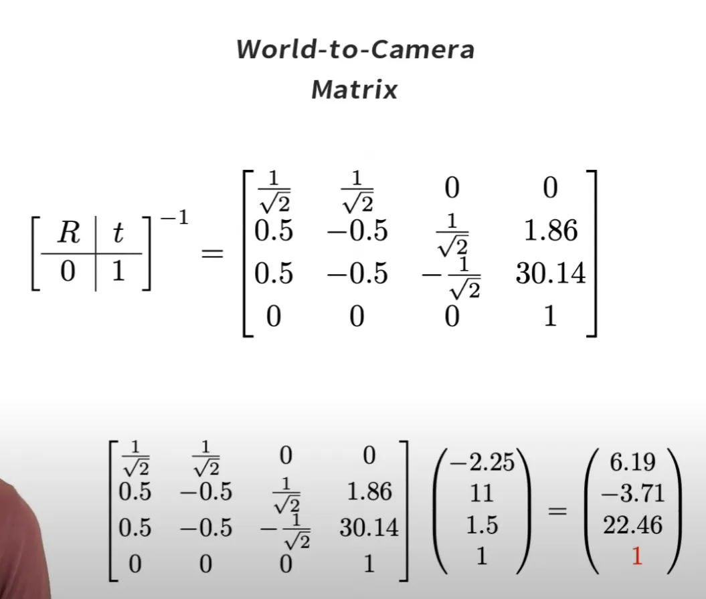

2025-09-17 Lab Meeting
Topic: Camera Matrix
Introduction
카메라 행렬(Camera Matrix)은 월드 공간(World Space)의 한 점이 어떻게 이미지에 매핑되는지를 알려준다.
카메라 행렬은 Intrinsic Matrix와 Extrinsic Matrix로 나뉜다.
INTRINSIC MATRIX
EXTRINSIC MATRIX
카메라의 내부 파라미터를 포함.
카메라의 외부 파라미터를 포함.
핀홀 카메라 (Pinhole Camera)
핀홀 카메라란?
실제 카메라는 분석이 복잡해서, 핀홀 카메라라는 단순화된 모델을 사용한다.
이상적인 핀홀 카메라는 무한히 작은 조리개(점)를 가지며, 그 결과 센서의 각 점에는 단 하나의 방향에서 오는 빛만 도달하게 된다.
핀홀 카메라 모델의 한계
실제 카메라는 렌즈를 사용하여 이미지를 선명하게 만들지만, 이로 인해 왜곡(Distortion)이 발생한다.
- 방사 왜곡 (Radial Distortion): 렌즈 중심에서 멀어질수록 이미지가 볼록/오목해지는 현상.
- 접선 왜곡 (Tangential Distortion): 렌즈와 센서가 평행하지 않아 이미지가 기울어 보이는 현상.
하지만 좋은 카메라에서는 오차가 작아, 핀홀 모델은 간단하고 매우 유용한 모델이다.
월드와 카메라 좌표계
좌표계 설정
일반적으로 월드 좌표계는 z축이 위를 향하지만, 카메라 작업 시에는 카메라가 양의 z축 방향을 바라보는 좌표계를 사용하는 것이 편리하다.
z축은 광축(Optical Axis)이라고도 불린다.

내부 파라미터 행렬 (Intrinsic Matrix)
기본 구성
핀홀 조리개를 카메라 좌표계 원점에, 이미지 평면(센서)을 조리개 뒤에 놓는다.
광축인 z축은 이미지 평면의 중심을 통과한다. 앞으로 대문자는 mm, 소문자는 pixel 단위를 의미한다.

초점 거리와 화각
관계
이미지 평면과 조리개 사이의 거리는 초점 거리(Focal Length, F)다.
포착 가능한 양 극단 광선 사이의 각도는 화각(Angle of View)이다.
투영 관계 (Projection)
닮은 삼각형
점 ($X^C, Z^C$)에서 온 광선이 조리개를 통과하여 센서에 닿으면, 이미지 상의 점은 -U가 된다.
닮은 삼각형의 원리를 통해 다음 식을 유도할 수 있다.
\[ \frac{-U}{-F} = \frac{X^C}{Z^C} \]단위 변환 및 오프셋
mm to pixel
초점 거리(F)와 이미지 크기(U)의 절대값보다 상대적 비율이 중요하므로, 단위 변환을 위한 계수 k를 도입할 수 있다.
\[ \frac{-kU}{-kF} = \frac{X^C}{Z^C} \]k는 mm를 pixel로 바꾸는 역할을 하며(k=w/W), 이를 통해 초점 거리($f_x$)와 이미지 좌표(u)를 픽셀 단위로 표현한다.
여기에 센서 오프셋($u_0$)을 추가로 고려하면, 최종 수식은 다음과 같이 정리된다.
최종 내부 파라미터 수식
최종 관계식은 다음과 같다.
\[ uZ^{C} = f_{x}X^{C} + u_{0}Z^{C} \] \[ vZ^{C} = f_{y}Y^{C} + v_{0}Z^{C} \]이것을 행렬로 표현하면,
\[ \begin{bmatrix} Z^Cu \\ Z^Cv \end{bmatrix}= \begin{bmatrix} f_x & 0 & u_0 \\ 0 & f_y & v_0 \end{bmatrix} \begin{bmatrix} X^C \\ Y^C \\ Z^C \end{bmatrix} \]동차 좌표계 (Homogeneous)
데카르트 좌표 [x, y]는 동차 좌표 (xS, yS, S)에 해당한다.


동차 좌표계의 장점
장점
데카르트 좌표계에서는 회전과 이동이 별개의 연산이지만, 동차 좌표계에서는 이 두 연산을 하나의 행렬 곱셈으로 통합할 수 있다.
Intrinsic Matrix (동차 좌표계)
동차 좌표계를 활용하여 내부 파라미터 행렬을 3x3 행렬로 확장할 수 있다.
\[ \begin{bmatrix} f_x & 0 & u_0 \\ 0 & f_y & v_0 \\ 0 & 0 & 1 \end{bmatrix} \begin{bmatrix} X^C \\ Y^C \\ Z^C \end{bmatrix}= \begin{bmatrix} Z^Cu \\ Z^Cv \\ Z^C \end{bmatrix} \]외부 파라미터 행렬 (Extrinsic Matrix)
객체 좌표를 월드 좌표계(World)에서 카메라 좌표계(Camera)로 변환하는 역할을 한다.
\[ \begin{bmatrix} X^C \\ Y^C \\ Z^C \end{bmatrix} = \begin{bmatrix} r_{11} & r_{12} & r_{13} & t_x \\ r_{21} & r_{22} & r_{23} & t_y \\ r_{31} & r_{32} & r_{33} & t_z \end{bmatrix} \begin{bmatrix} X^W \\ Y^W \\ Z^W \\ 1 \end{bmatrix} \]좌표 변환 (Coordinate Transformations)
변환 관계
좌표계를 변환하는 것은 객체의 좌표를 역방향으로 변환하는 것과 같다.
즉, Camera-to-World 행렬의 역행렬이 World-to-Camera 행렬이다.

Extrinsic Matrix 예시
월드 좌표계에서 카메라 좌표계로 가기 위해, 월드 축을 중심으로 회전(Rotation)하고 이동(Translation)시킨다.
이 변환 정보를 통해 Camera-to-World 행렬을 만들 수 있다.

Camera-to-World Matrix
카메라 좌표를 월드 좌표로 매핑하는 행렬이다. 카메라의 위치와 방향(회전)으로 정의된다.

World-to-Camera Matrix
우리가 필요한 것은 World-to-Camera 행렬이며, 이것은 Camera-to-World 행렬의 역행렬일 뿐이다.
